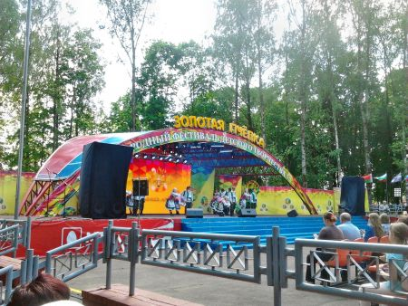
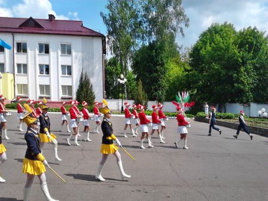

XVIII
Международный фестиваль детского творчества «Золотая
пчёлка».
С 23 по 26 мая в г. Климовичи проходил XVIII
Международный
конкурс детского творчества «Золотая пчёлка», в
котором приняли участие
коллективы и исполнители из Беларуси, России, Словакии, Украины,
Узбекистана, Кыргызстана, Сербии, Латвии, Болгарии.

Главным моментом всего фестиваля и самым ответственным для ребят стали
конкурсные просмотры и прослушивания, которые прошли 24-25 мая.
Международное жюри оценивало выступления участников по жанрам:
хореографическое искусство (народно-сценический, эстрадный, современный
танец), вокальное искусство (народное, эстрадное пение),
изобразительное искусство (живопись, графика), декоративно-
прикладное искусство. Конкурсанты делились на три возрастные группы:
младшая (9-12 лет), средняя (13-
15 лет) и старшая (16-18).
Номинацию «Хореографическое искусство» оценивали:
Нестеров Валерий
Кузьмич – Народный артист России, профессор, основатель и
руководитель
Творческой Мастерской, художественный руководитель
вокально-хореографических ансамблей «Звонница» и
«Московия», президент
и автор проекта Международного фестиваля-конкурса «Танцуй и
пой, Россия
молодая!», председатель жюри; Синковец Анатолий Анатольевич
–
Заслуженный деятель культуры Республики Беларусь; Кашевич Максим
Георгиевич – Ведущий солист государственного ансамбля танца
Республики
Беларусь, обладатель медали Франциска Скорины, педагог-хореограф.
Открыл фестиваль День дружбы с театрализованной
интерактивной
площадкой
«Клімавіцкі гасцінец», на которой выступали
творческие коллективы,
мастера декоративно-прикладного искусства, игровые и актёрские группы
учреждений культуры Климовичского района, воспитанники и преподаватели
местного Дома ремёсел, районного центра социального обслуживания
населения.
В городском парке работала театрализованная интерактивная площадка. Все
желающие могли приобрести белорусскую сувенирную продукцию, игрушки.
Любителям живописи предложили посетить вернисаж детских рисунков и
работ декоративно-прикладного искусства. Заметно
выделялась историческая экспозиция Климовичского районного музея
«Чайная комната княжны Мещерской» .
Вечером всех ожидала шоу-программа с проведением жеребьёвки
участников конкурса фестиваля. А завершился день диско-марафоном.
Пятница была объявлена Днём торжества детского творчества. Утром
начались конкурсные прослушивания участников фестиваля.  Жюри предстояло
выбрать лучших в вокале, хореографии и изобразительном искусстве. Весь
день в городском парке работала тематическая развлекательная площадка.
Гости нашего города смогли посетить проспект презентаций региональных
фестивалей и праздников Могилевской области, таких как
«Гаспадарчы сыр»
(Славгородский район), «Ильинский кирмаш»
(Костюковичский район) «День
варенья» (Чериковский район) и других.
Жюри предстояло
выбрать лучших в вокале, хореографии и изобразительном искусстве. Весь
день в городском парке работала тематическая развлекательная площадка.
Гости нашего города смогли посетить проспект презентаций региональных
фестивалей и праздников Могилевской области, таких как
«Гаспадарчы сыр»
(Славгородский район), «Ильинский кирмаш»
(Костюковичский район) «День
варенья» (Чериковский район) и других.
Состоялась торжественная церемония закладки таблички — соты
новой
страны-участницы форума. Достойное место в скульптурной композиции
символа фестиваля заняла Словакия.
После вечера знакомств организаторы и гости форума отправились на
открытие «Золотой пчёлки». Многочисленные зрители,
собравшиеся вечером
в городском парке увидели
шоу-представление «Формула счастливого детства».
Завершился второй день
фестиваля праздничным фейерверком.
Ярким был и третий день фестиваля «Золотая
пчёлка», продолжались конкурсные прослушивания.
В 10 часов начался конкурс рисунков на асфальте «Мой родны
кут»
Дипломы первой степени получили юные климовчанки Елизавета Петроченко,
Полина Прохорова, Дарья Дубовая, Валерия Живодрова и Дарья Маслова.
С 14 часов на площади 50 лет Великого Октября работала спортивная
площадка «Движение вверх!», посвящённая проведению
в Беларуси II
Европейских игр.
Интересными были показательные выступления и конкурсные программы,
подготовленные управлением МЧС по Могилёвской области.
Завершением субботних праздничных мероприятий стала концертная
программа «Подарок фестивалю» с участием
музыкальной группы «ByCity»

В воскресенье, 26 мая центральными событиями стали праздничный парад
участников XVIII Международного фестиваля «Золотая
пчёлка» и
долгожданная церемония награждения лауреатов.
В жанре «Хореографическое искусство» Дипломами
третей степени было
отмечено 10 конкурсантов, второй степени — 11. Дипломами
первой степени
были награждены: ансамбль народного танца
«Бонварнон» (Республика
Северная Осетия-Алания, Российская Федерация), Dance group
«Street Hit»
Dance studio «Inter» (Латвия), образцовый детский
хореографический
ансамбль «Сюрприз» (Санкт-Петербург), образцовый
ансамбль танца
«Папараць-кветка» (Слуцк, Республика Беларусь),
образцовый
хореографический ансамбль «Дивертисмент» ГУО
Могилёвская детская школа
искусств № 1».
Гран-при XVIII Международного фестиваля детского творчества
«Золотая
пчёлка» в жанре «Хореографическое
искусство» завоевал образцовый
хореографический ансамбль «Алеся» учреждения
образования «Могилёвский
государственный колледж искусств».
В жанре «Вокальное искусство» участникам было
вручено 25 Дипломов
третьей степени и 19 Дипломов второй степени. Дипломы первой степени
получили Мубинабону Пулатова (город Маргилан, Республика Узбекистан),
Маргарита Цумарева (Могилёв), Лилиана Камоцкая (Минск), Анастасия
Скоропад (Могилёв), Александра Лактионова (Минск), вокальный дуэт в
составе Дарьи Лазко, Кристины Барановой образцового фольклорного
ансамбля «Купалочка» (Кличев), образцовая вокальная
студия «Crystal»
(Могилёв), образцовый любительский коллектив эстрадной студии
«Звездопад» (Слуцк), вокальная группа
«Радуга» (Могилёв).
Гран-при XVIII Международного фестиваля детского творчества
«Золотая
пчёлка» в жанре «Вокальное искусство»
завоевали Анастасия Дмитрачкова,
учащаяся ГУО «Могилёвская городская гимназия № 1» и
вокальное трио в
составе Анны Объедовой, Анастасии Тороп, Виктории Ковалёвой образцового
вокального ансамбля «Серпантин» (Гомель).
В жанрах «Изобразительное искусство» Гран-при
получил Сухроб Эркинов
(Узбекистан), «Декоративно-прикладное искусство»
— Александра Кухтина
(г. Быхов).
Диплом и специальный приз
ОАО «Белагропромбанк» за лучшую
балетмейстерскую работубыл вручён Наталье Вангесовой, руководителю
образцового ансамбля танца «Невская
акварель»
(Российская Федерация). Специальный диплом За верность
славянским традициям» и приз от компании
«Белстрайк» вручен вокальному
дуэту «Файнi дiвчата» в составе Богданы Хомченко и
Дарьи скалюн детской
студии искусств академического ансамбля песни и танца
«Сиверские
клейноды» Черниговского областного филармонического центра
фестивалей и
концертных программ (Украина).
Безусловно, Международный фестиваль детского творчества
«Золотая пчёлка» ещё не раз откроет яркие имена и
станет хорошим
стимулом для дальнейшего творческого роста юных дарований.
|